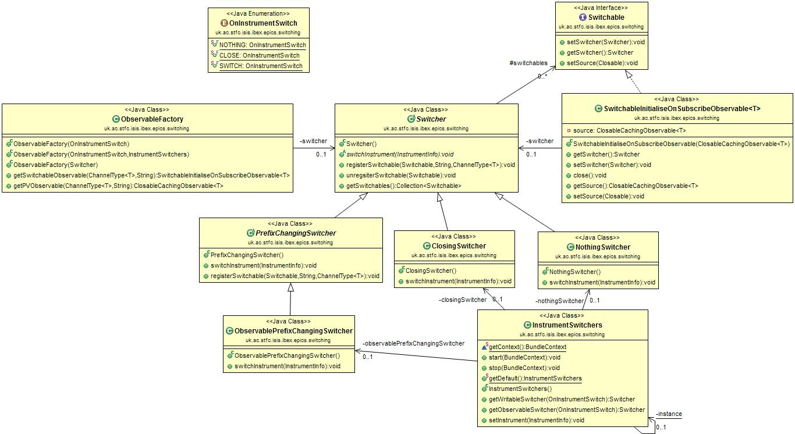
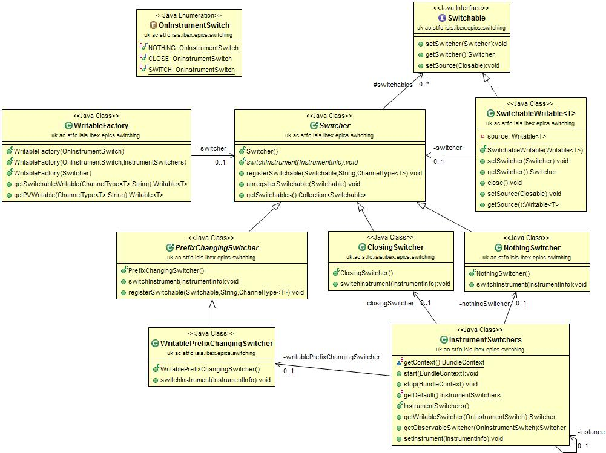

PV switching
If you are only interested in how to create PVs in IBEX with proper switching behaviour go to “Using the PV Switching”.
Background
PV switching occurs when a user in IBEX changes from viewing one instrument to another. It is then required that PVs ‘switch’ prefix and instead of, for example, looking at IN:LARMOR:CS:BLOCKSERVER:CONFIGS the GUI will now point to IN:DEMO:CS:BLOCKSERVER:CONFIGS. This means that information about the new instrument will be displayed.
This was originally done in IBEX by maintaining a PVAddressBook class that kept a map of all PV-connected observables that had been registered with it and reset their prefixes when the instrument was changed. This created a number of issues:
Some PVs might not need to be switched (e.g. the beam status), this was solved by bypassing the
PVAddressBookand creating PVs in other pluginsThere was no way to remove PVs from this address book, which led to an ever increasing map, and subsequent channel access connection attempts, when configurations or instruments were changed
Some PVs will need to be closed all together when instruments are switched, such as those relating to specific configurations or synoptics. There was no mechanism for this to happen within the PVAddressBook
PV creation was messy, requiring inheriting from specific classes or some knowledge of how the underlying PVs were created
This was further complicated by the large number of Observable, Observer, Writable and Writer classes that were used to observe PVs in different situations.
Solution Design
The proposed solution was to remove the central PVAddressBook class and instead use a factory for creating PV Observables, which are passed the switching behaviour as a switcher class. Each of these switcher classes provides a different switching functionality and is switched using the extension point that is globally used for instrument switching in the GUI.

When an observable PV is required an instance of ObservableFactory is first created and passed an OnInstrumentSwitch enum to describe which switching behaviour is required
On initialisation the factory will then query the InstrumentSwitchers class for the specific Switcher class that handles that type of switching
The original class that wanted the PV will subsequently ask the factory for PVs, providing the channel type and PV address. This will be provided as a
SwitchableObservablethat can be subscribed to for value changes.Before providing the new Observable object the factory will register it with the relevant Switcher class, each of which holds a list of all
Switchableobjects that it is required to switch. TheSwitchableObservableis also provided with a reference to the switcher so that it can remove itself from the relevant list if it is closed for any reason.When the instrument is changed the InstrumentSwitchers class will call the
switchInstrumentsmethod on each of the switchers, which will then go on to perform the relevant switching behaviour. E.g. Changing aSwitchable’s source, closing it or doing nothing.
A similar process also occurs when switching writable PVs, as can be seen in the UML diagram below. The differences being that a WritableFactory is used, this can create a Writable that inherits from Switchable and can write values to PVs. Both the Switchable interface and the abstract PrefixChangingSwitcher were created so that the switching process is as similar as possible when dealing with Writables and Observables

Using the PV Switching
The inner workings of the switching code need not be understood to create PVs that switch with the instrument. Only steps 1 and 3 in the previous list need be performed by a class that wants a new PV. Specifically the following code must be used
ObservableFactory closingObsFactory = new ObservableFactory(OnInstrumentSwitch.CLOSE);
ForwardingObservable<String> pv
= closingObsFactory.getSwitchableObservable(new StringChannel(), "A_PV_ADDRESS"));
The above code will create a String type PV observable that will close when the instrument is changed. Subscriptions can now be attached to the PV and will be called when PVs change value.